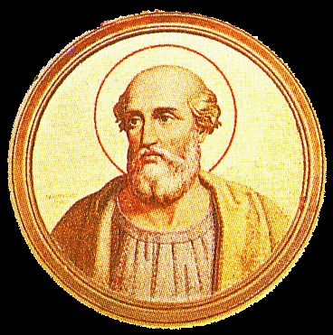

St. Hyginus
Reigned about 138-142; succeeded Pope Telesphorus, who, according to Eusebius (Church History IV.15), died during the first year of the reign of the Emperor Antonius Pius — in 138 or 139, therefore. But the chronology of these bishops of Rome cannot be determined with any degree of exactitude by the help of the authorities at our disposal today. According to the "Liber Pontificalis", Hyginus was a Greek by birth. The further statement that he was previously a philosopher is probably founded on the similarity of his name with that of two Latin authors. Irenaeus says (Against Heresies III.3) that the Gnostic Valentine came to Rome in Hyginus's time, remaining there until Anicetus became pontiff. Cerdo, another Gnostic and predecessor of Marcion, also lived at Rome in the reign of Hyginus; by confessing his errors and recanting he succeeded in obtaining readmission into the bosom of the Church, but eventually he fell back into the heresies and was expelled from the Church. How many of these events took place during the time of Hyginus is not known. The "Liber Pontificalis" also relates that this pope organized the hierarchy and established the order of ecclesiastical precedence (Hic clerum composuit et distribuit gradus). This general observation recurs also in the biography of Pope Hormisdas; it has no historical value, and according to Duchesne, the writer probably referred to the lower orders of the clergy. Eusebius (Church History IV.16) claims that Hyginus's pontificate lasted four years. The ancient authorities contain no information as to his having died a martyr. At his death he was buried on the Vatican Hill, near the tomb of St. Peter. His feast is celebrated on 11 January.
DUCHESNE, (ed.) Liber Pontificalis, I, 131; Acta Ss., Jan. I, 665; HARNACK, Geschichte der altchristl. Literatur, II: Die Chronologie, I (Leipzig, 1897), 144 sq.
Kirsch, J.P. (1910). Pope St. Hyginus. In The Catholic Encyclopedia. New York: Robert Appleton Company. Retrieved April 26, 2010 from New Advent: http://www.newadvent.org/cathen/07593a.htm